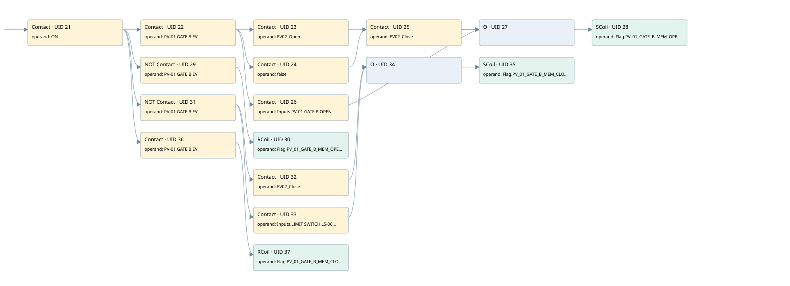

pv01
r1 scraps gate 2 · 검색 색인 순서 12 · 원본 내부 NID 추정 12
백업 PLF 원본의 2840479 바이트 위치에서 복원한 XML. 검색 문서 1922의 객체 키 16102200c73d000000000000와 연결했다. 이름 해석 15/15개. 남은 RefId는 상수 또는 미해석 참조다.
연결 구조 다시 그리기
원본 Part/PCon/Wire를 이용한 연결도다. TIA 화면의 래더 배치 또는 실행 결과를 재현한 그림은 아니다. 핀 연결은 아래 표와 원본 XML을 기준으로 읽는다. 노드 위에 마우스를 두면 피연산자 이름을 볼 수 있다.

접점·코일·블록과 피연산자
| Part UID | Gate | Negated 핀 | 연결 피연산자 |
|---|---|---|---|
| 21 | Contact | operand = ON | |
| 22 | Contact | operand = PV-01 GATE B EV | |
| 23 | Contact | operand = EV02_Open | |
| 24 | Contact | operand = false | |
| 25 | Contact | operand = EV02_Close | |
| 26 | Contact | operand = Inputs.PV-01 GATE B OPEN | |
| 27 | O | ||
| 28 | SCoil | operand = Flag.PV_01_GATE_B_MEM_OPEN | |
| 29 | Contact | operand | operand = PV-01 GATE B EV |
| 30 | RCoil | operand = Flag.PV_01_GATE_B_MEM_OPEN | |
| 31 | Contact | operand | operand = PV-01 GATE B EV |
| 32 | Contact | operand = EV02_Close | |
| 33 | Contact | operand = Inputs.LIMIT SWITCH LS-06GATE B CLOSEDVALVE PV-01 | |
| 34 | O | ||
| 35 | SCoil | operand = Flag.PV_01_GATE_B_MEM_CLOSE | |
| 36 | Contact | operand = PV-01 GATE B EV | |
| 37 | RCoil | operand = Flag.PV_01_GATE_B_MEM_CLOSE |
접점 경로를 펼친 조건식
Contact·O/A·비교기의 원본 연결을 읽기 쉽게 펼친 보조 해석이다. POWER는 전원 레일 시작을 뜻한다. 호출 블록·에지·타이머의 내부 동작과 다중 쓰기 순서는 이 표로 실행 검증하지 않았다. 미해석 핀과 RefId는 원문 연결표에서 확인한다.
| UID | 동작 | 대상 | 원본 접점 경로 | 내용 |
|---|---|---|---|---|
| 28 | SCoil | Flag.PV_01_GATE_B_MEM_OPEN | (((ON AND PV-01 GATE B EV) AND EV02_Open) OR (((ON AND PV-01 GATE B EV) AND false) AND EV02_Close) OR ((ON AND PV-01 GATE B EV) AND Inputs.PV-01 GATE B OPEN)) | 조건 성립 시 Set |
| 30 | RCoil | Flag.PV_01_GATE_B_MEM_OPEN | (ON AND NOT [PV-01 GATE B EV]) | 조건 성립 시 Reset |
| 35 | SCoil | Flag.PV_01_GATE_B_MEM_CLOSE | (((ON AND NOT [PV-01 GATE B EV]) AND EV02_Close) OR ((ON AND NOT [PV-01 GATE B EV]) AND Inputs.LIMIT SWITCH LS-06GATE B CLOSEDVALVE PV-01)) | 조건 성립 시 Set |
| 37 | RCoil | Flag.PV_01_GATE_B_MEM_CLOSE | (ON AND PV-01 GATE B EV) | 조건 성립 시 Reset |
원본 배선 연결
| Wire UID | 동일 Wire 연결 끝점 |
|---|---|
| 53 | Powerrail {} ↔ Part 21.in |
| 54 | ORef 38 (ON) ↔ Part 21.operand |
| 55 | Part 21.out ↔ Part 22.in ↔ Part 29.in ↔ Part 31.in ↔ Part 36.in |
| 88 | ORef 89 (PV-01 GATE B EV) ↔ Part 22.operand |
| 57 | Part 22.out ↔ Part 23.in ↔ Part 24.in ↔ Part 26.in |
| 58 | ORef 40 (EV02_Open) ↔ Part 23.operand |
| 59 | Part 23.out ↔ Part 27.in1 |
| 60 | ORef 41 (false) ↔ Part 24.operand |
| 61 | Part 24.out ↔ Part 25.in |
| 62 | ORef 42 (EV02_Close) ↔ Part 25.operand |
| 63 | Part 25.out ↔ Part 27.in2 |
| 64 | ORef 43 (Inputs.PV-01 GATE B OPEN) ↔ Part 26.operand |
| 65 | Part 26.out ↔ Part 27.in3 |
| 66 | Part 27.out ↔ Part 28.in |
| 67 | ORef 44 (Flag.PV_01_GATE_B_MEM_OPEN) ↔ Part 28.operand |
| 91 | ORef 92 (PV-01 GATE B EV) ↔ Part 29.operand |
| 90 | Part 29.out ↔ Part 30.in |
| 70 | ORef 46 (Flag.PV_01_GATE_B_MEM_OPEN) ↔ Part 30.operand |
| 93 | ORef 94 (PV-01 GATE B EV) ↔ Part 31.operand |
| 72 | Part 31.out ↔ Part 32.in ↔ Part 33.in |
| 73 | ORef 48 (EV02_Close) ↔ Part 32.operand |
| 74 | Part 32.out ↔ Part 34.in1 |
| 75 | ORef 49 (Inputs.LIMIT SWITCH LS-06GATE B CLOSEDVALVE PV-01) ↔ Part 33.operand |
| 76 | Part 33.out ↔ Part 34.in2 |
| 77 | Part 34.out ↔ Part 35.in |
| 78 | ORef 50 (Flag.PV_01_GATE_B_MEM_CLOSE) ↔ Part 35.operand |
| 96 | ORef 97 (PV-01 GATE B EV) ↔ Part 36.operand |
| 95 | Part 36.out ↔ Part 37.in |
| 81 | ORef 52 (Flag.PV_01_GATE_B_MEM_CLOSE) ↔ Part 37.operand |
식별자 해석 근거 15개
| ORef UID | RefId | 이름 | IdentXmlPart 파일 | 해석 방법 |
|---|---|---|---|---|
| 38 | 1 | ON | 0607-IdentXmlPart.xml | UID/RID + search-text + NID agreement |
| 89 | 49 | PV-01 GATE B EV | 0607-IdentXmlPart.xml | UID/RID + search-text + NID agreement |
| 40 | 129 | EV02_Open | 0607-IdentXmlPart.xml | UID/RID + search-text + NID agreement |
| 41 | 130 | false | 0610-IdentXmlPart.xml | literal candidate: UID/RID/NID + nearby named declarations + search-text agreement |
| 42 | 131 | EV02_Close | 0607-IdentXmlPart.xml | UID/RID + search-text + NID agreement |
| 43 | 132 | Inputs.PV-01 GATE B OPEN | 0609-IdentXmlPart.xml | UID/RID + search-text + NID agreement |
| 44 | 11 | Flag.PV_01_GATE_B_MEM_OPEN | 0609-IdentXmlPart.xml | UID/RID + search-text + NID agreement |
| 92 | 49 | PV-01 GATE B EV | 0607-IdentXmlPart.xml | UID/RID + search-text + NID agreement |
| 46 | 11 | Flag.PV_01_GATE_B_MEM_OPEN | 0609-IdentXmlPart.xml | UID/RID + search-text + NID agreement |
| 94 | 49 | PV-01 GATE B EV | 0607-IdentXmlPart.xml | UID/RID + search-text + NID agreement |
| 48 | 131 | EV02_Close | 0607-IdentXmlPart.xml | UID/RID + search-text + NID agreement |
| 49 | 133 | Inputs.LIMIT SWITCH LS-06GATE B CLOSEDVALVE PV-01 | 0609-IdentXmlPart.xml | UID/RID + search-text + NID agreement |
| 50 | 134 | Flag.PV_01_GATE_B_MEM_CLOSE | 0609-IdentXmlPart.xml | UID/RID + search-text + NID agreement |
| 97 | 49 | PV-01 GATE B EV | 0607-IdentXmlPart.xml | UID/RID + search-text + NID agreement |
| 52 | 134 | Flag.PV_01_GATE_B_MEM_CLOSE | 0609-IdentXmlPart.xml | UID/RID + search-text + NID agreement |
검색 코드 보조 자료
참조 명칭을 찾기 위한 자료이며 실행 순서나 AND/OR 관계는 위 연결표로 확인한다.
"on" "pv-01 gate b ev" "ev02_open" "flag".pv_01_gate_b_mem_open "pv-01 gate b ev" "flag".pv_01_gate_b_mem_open "pv-01 gate b ev" "ev02_close" "flag".pv_01_gate_b_mem_close "inputs"."limit switch ls-06gate b closedvalve pv-01" "pv-01 gate b ev" "flag".pv_01_gate_b_mem_close false "ev02_close" "inputs"."pv-01 gate b open"